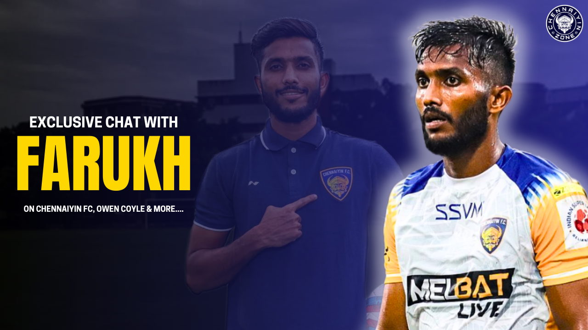

Thiruppu Munai: Chennaiyin FC Seek Vengeance against underdogs Hyderabad FC - A preview
Chennaiyin FC take on Hyderabad FC, away at the GMC Balayogi Stadium on the 1st of October 2024 to kick-off Matchweek-4 of the ISL.
‘Comeback’ was the tone that Gaffer Owen Coyle resonated in the pre-match press conference the other day, ahead of the game against Hyderabad FC. And for a team that indeed made a splendid fightback last season to qualify for the playoffs, tomorrow’s match is poetic of sorts. Because, that comeback started post the game versus Hyderabad FC, where The Nizams pulled the rabbit out of the hat last time to famously defeat Chennaiyin FC with a score of 1-0, that too with an all-Indian lineup.
Tomorrow, Chennaiyin FC can seek to avenge the loss and finally settle the scores . Truly, there’s a lot in stake in this Southern derby.
The Marina Machans will look to get back to winning ways against Hyderabad FC in what promises to be an exciting mid-week fixture.

Team News:
,Chennaiyin FC head coach Owen Coyle confirmed that he’s likely to have his full roster available for selection, despite having “one or two little niggles” in the team. Jiteshwor Singh and Bikash Yumnam, who missed the match-day squad due to injuries last game, have started training and are expected to be in contention for the game. Newly-joined Edwin Vanspaul however is unlikely to make the 20-man squad for the next match, as Owen confirmed that “he’s got a bit of fitness to find”, having only started training with the squad last week.
Hyderabad FC, on the other hand, will be boosted by the signings of Serbian centre-back Stefan Šapić and Brazilian striker Allan Paulista (who came on as a sub last game). Cy Goddard will be the team’s main attacking thread upfront. Leander D’Cunha misses the game due to suspension, owing to the red card he received against Punjab in the previous fixture. Otherwise, there are no other reported absentees in the squad.
Game Plan: What can we expect from Hyderabad FC?
Thangboi Singto’s teams are known for their build-up play through the wings. Hence, not a surprise that both Abdul Rabeeh and Chhunga Hmar form the crux of the attack, while Cy Goddard playing further upfront. Owen Coyle rightly emphasized on these two young Indian players in pre-match PC, while also adding that Hyderabad FC are “dangerous opponents” who have players with “a big point to prove”, thus signifying that complacency would be put to back-doors when Chennaiyin FC go head-to-head against them.

Playing with a fluid 4-2-3-1, one can expect Hyderabad to be dangerous on the counters. Lenny is essentially the pivot holding the midfield. Ayush Adhikari, who left Chennaiyin FC to join Hyderabad FC this season, has been a breath of fresh air in the middle of the park. With Lenny doing bulk of the dirty work, it has allowed Ayush to drift forward to play those through ball to the attackers. Watch out for Alex Saji from set-pieces too.
Opposition players to look out for:
Pace, guile and trickery - he’s got it all. Hyderabad’s Chhunga Hmar is a menace to the opposition full-back. The 24 year-old Mizo winger has been continuing his impressive displays from last season, and has become an integral part of the team’s attack now. If given even a miniscule of time and inch of space, he will surely make you pay. If Chennaiyin FC are to restrict Hyderabad from truly coming into this game, then Chhunga and his wing partner Rabeeh are the ones they need to keep quiet.

Another talent from Hyderabad’s ballers union, Abdul Rabeeh is the cream of the crop of this young but promising squad. Just 23, yet he is among the senior figures of Hyderabad FC, having been associated with the club for nearly 4 years now. His Pace and movement is a thorn in the steps of the opposition defenders. If he can produce those pin-point crosses to the strikers, well then Chennaiyin FC might just have an extra problem to worry about.
The fact that Chennaiyin FC were ready to splurge in 55 L to procure his services, tells you about his quality. Comfortable on the ball, with an eye to make a pass - Ayush Adhikari embodies the modern day midfielder. In just 2 appearances for his new club, Adhikari has looked in good nick and might just finally have his break through season this time around. He might no longer be playing for The Marina Machans, but he might just as well come back to haunt them.
Stat Attack: The numbers that count!
- Hyderabad FC have only won one of their last 26 matches in the Indian Super League, conceding 48 goals and scoring 10 in the process; that one win, however, came in their last outing against Chennaiyin FC (1-0 on 9 March 2024).
- Owen Coyle has never lost to Hyderabad FC in an away game: In fact, he has a 100% win record against them in the last 3 away games.
- Chennaiyin FC have averaged two open-play sequences of 10+ passes per game in the Indian Super League since the start of 2024, the lowest such aggregate of any side during this span; only seven of their 26 total such sequences during this span have resulted in a shot or a touch inside the opposition box while none of them have resulted in a goal.
- Hyderabad FC's Ramhlunchhunga has created 15 chances in the Indian Super League since the start of 2024, the third most by any Indian player yet to register an assist during this period (Mahesh Naorem - 19, Anirudh Thapa - 16).
- Daniel Chima Chukwu of Chennaiyin FC has scored five goals against Hyderabad FC in the Indian Super League, the joint second highest by any player against them in the competition (also Sunil Chhetri) behind only Roy Krishna (8); Chima's only hat-trick in the ISL came against HFC last season.
- Chennaiyin FC’s Farukh Choudhary has recorded eight shots from inside the box in the ongoing Indian Super League season, the most by any Indian player this term; in fact, only Sunil Chhetri (3) has scored more goals from inside the box than Farukh (2) so far this season.
X-Factor: Lukas Pivetta Brambilla
Chennaiyin FC and Brazilian ballers. A match made in heaven. And the latest entrant to this elite club is Lukas Brambilla. Widely expected to be the club’s focal point of attack this season, Lukas sure got some big shoes to fill of his predecessor, Rafael Crivellaro, who is regarded as a club legend by many. He has all the ingredients of not just a creative playmaker, but also a crowd entertainer - flair, silky-smooth dribbling and an eye for the goal. The juicy flavour in a monochrome palette.

Owen highly spoke of him during the pre-match PC saying, “I thought he did very well in the second half, in terms of receiving the ball, give us a different type of flavour,” while also adding he can do “terrific things”. Lukas Brambilla is reportedly inching closer to stake a claim in the first XI. Tomorrow, there is a good possibility that he might have an extended role to play. If he does so, then we have a treat on our hands! X-factor signified.
Predicted Lineups:
Hyderabad FC:Arshdeep Singh, Parag Shrivas, Rafi, Alex Saji, Suyal Joshy, Lenny Rodrigues, Ayush Adhikari, Chhunga Hmar, Cy Goddard, Abdul Rabeeh, Devendra.
Chennaiyin FC:Mohammad Nawaz, Ankit Mukerjee, Ryan Edwards, PC Laldinpuia, Laldinliana Renthlei, Elsinho Diaz, Lalrinliana Hnamte, Farukh Choudhary, Irfan Yadwad, Daniel Chima Chukwu, Connor Shields.
Watch More:

Chennaiyin FC V/S Mohammed SC Preview
An Exclusive Chat with Namma Farukh Choudhary on Chennaiyin FC, Owen Coyle and more!

Chennaiyin FC Breaches Kalinga Stadium | Farukh, Chima Scores | Chennaiyin FC 3-2 Odisha FC Review

ISL 2024-25 Chennaiyin FC Season Preview
Chennaiyin FC 4-1 Churchill Brothers FC | Gurkirat Singh GOLAZO! | ISL 2024-25 FIXTURES RELEASED!